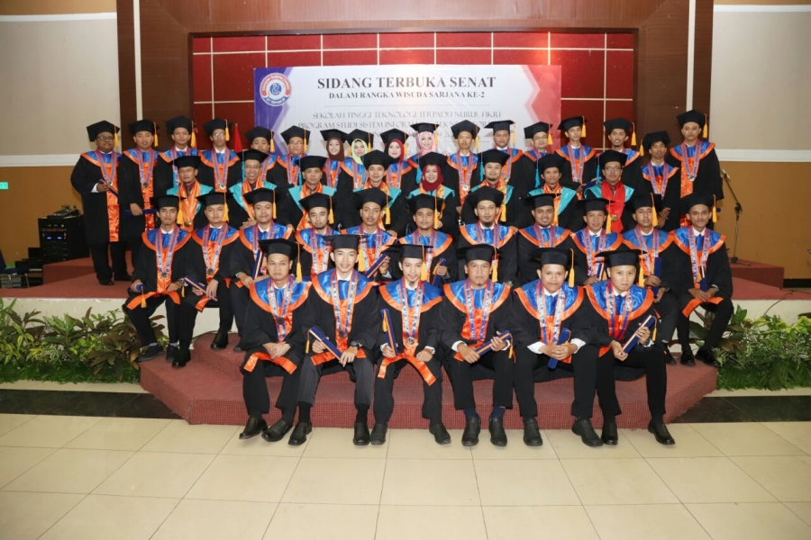
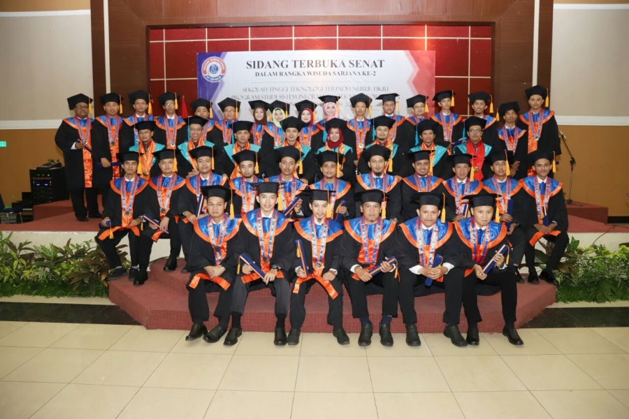
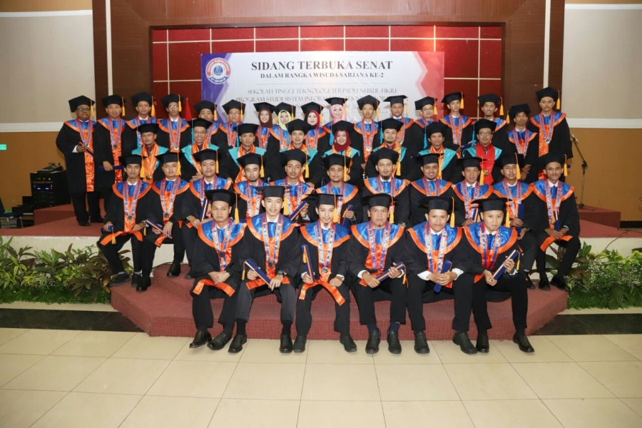

Sistem Parkir STT-NF adalah salah satu fasilitas untuk pengguna jasa parkir kendaraan di Sekolah Tinggi Teknologi Terpadu Nurul Fikri. Sistem Parkir STT-NF terdiri dari 2 kategori : Parkir Kendaraan Harian (Daily Parking) dan Parkir Kendaraan Inap (Overnight Parking).

Mau Lanjut Kuliah S1 Dengan Pilihan Jurusan Yang Keren & Kekinian Banget? Pergeseran sektor bisnis pada akhirnya membutuhkan talenta baru. Harus siap dihadapi tantangannya dan dioptimalkan secara digital. Kemudian, STT-NF telah membuka pendaftaran mahasiswa baru Jurusan Bisnis Digital untuk menjawab kebutuhan zaman. Untuk siswa-siswi SMA jurusan IPS, SMK jurusan Manajemen, Ekonomi, dan lainnya silahkan segera mendaftar Program Sarjana Jurusan Bisnis Digital di STT-NF. Kenapa harus di STT-NF?
Benefit Kuliah S1 Bisnis Digital di STT-NF:
1. FREE UANG GEDUNG
2. POTONGAN BIAYA SEMESTER UP TO 2 JUTA
3. PROGRAM KULIAH 3,5 TAHUN
4. LULUS KULIAH LANGSUNG KERJA
DAFTAR ONLINE: admisi.nurulfikri.ac.id INFORMASI: 0857 1624 3174 Go Follow This! IG & TikTok : @sttterpadunf YT & FB : STTTerpaduNF Linkedin : STTTerpaduNF Twitter : @sttterpadunf1 #sttnf #kampusnurulfikri #nufian #JagoITBerkarakter #CharacterBuildingCampus #jurusanbisnisdigital #bisnisdigital
JALUR BEASISWA 100% FULL SAMPAI LULUS Dibuka Penerimaan Mahasiswa Baru TA. 2022/2023 STT Terpadu Nurul Fikri Jalur Beasiswa
Program Studi:
1. Teknik Informatika (S1)
2. Sistem Informasi (S1)
Persyaratan:
1. Lulusan SMA/K/Sederajat Tahun 2020, 2021, & 2022
2. Memiliki Akun KIP-K
3. Mengupload Ijazah Terakhir & Raport Semester 1-5
4. Mengupload Pas Foto ukuran 4X6 Background Putih
5. Mengupload KTP & KK
6. Membayar Biaya Pendaftaran Rp 300.000,-
Benefit:
1. Kuliah Gratis sampai Lulus
2. Uang Saku per Semester
3. Pulsa Internet untuk Kuliah
4. Pelatihan IT Sertifikasi Kompetensi
DIBUKA 100 KUOTA BEASISWA, KHUSUS KELAS PAGI. Ayo, Segera Daftar! DAFTAR ONLINE: admisi.nurulfikri.ac.id Info Lebih Lanjut Hubungi: 0857 1624 3174 Go Follow This! IG & TikTok : @sttterpadunf YT & FB : STTTerpaduNF Linkedin : STTTerpaduNF Twitter : @sttterpadunf1 #sttnf #kampusnurulfikri #nufian #JagoITBerkarakter #CharacterBuildingCampus #beasiswa #beasiswakuliah #beasiswaS1 #beasiswafull #beasiswapenuh